Markup¶
- single-user program, built in Visual Basic Application for Word, to descentralized use in any workstation.
- Its installation can be done in several computers, others than local server.
- tool to identify bibliographic elements in the articles and texts, according to SciELO DTD for article and for text, based on standard ISO 8879-1986 (SGML - Standard Generalized Markup Language) and ISO 12083-1994 (Electronic Manuscript Preparation and Markup).
With this program, the user can:
- open the articles or text files
- identify the bibliographic elements in the file, by select them with the mouse or keyboard and then tagging them, according DTD
- markup bibliographics references semiautomatically
- validate the identification according to article dtd.html#article and for text
- generate PMC XML (under development) http://dtd.nlm.nih.gov/publishing/3.0/. Read the instructions given by Markup PMC.
- validate PMC XML
- preview the text generated from XML PMC
Before using the Markup¶
you must have one article or text by file
check if the file contents is same of printed version or PDF file
check if the file format is HTML, .doc, .rtf
check if the number which the articles belong is recorded in title and issue databases
- If the markup will be done in a different machine than local server, copy the files bellow from (local server)binmarkup :
- ??_issue.mds - it is updated when a new issue data is input on or modified in the database
- issue.mds - it is updated when a new issue data is input on or modified in the database
- ??_attb.mds - it is updated when a new code table data is input on or modified in the database
- automata.mds - it is updated when a new title data is input on or modified in the database
- journal-standard.txt - it is updated when a new issue data is input on or modified in the database
Open the program¶
Go to the menu, select SciELO and Markup

The program will try to open the Microsoft Word Program which is set in the file bin\markup\start.mds.
If the path is not valid, the program will ask for the right path of Microsoft Word Program.
Other option is to change this path by editing the bin\markup\start.mds file.

Just in case it doesn’t appear the message about macro execution, you need to drop the macro’s security level down.
In Word 2003, it appears as following:
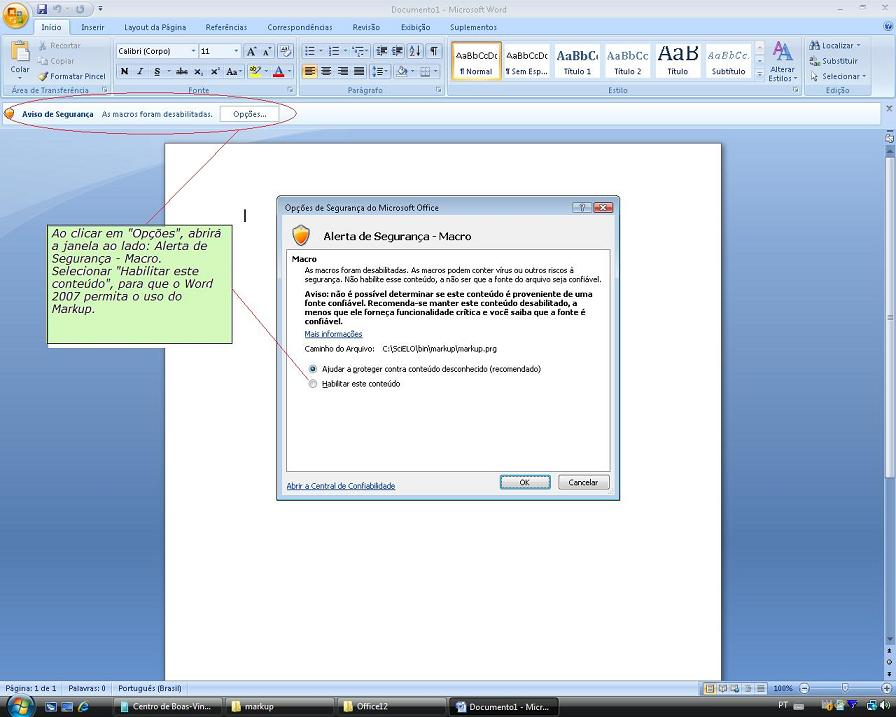
If Word program opens correctly, the Markup bar will appear at the inferior part of the screen.
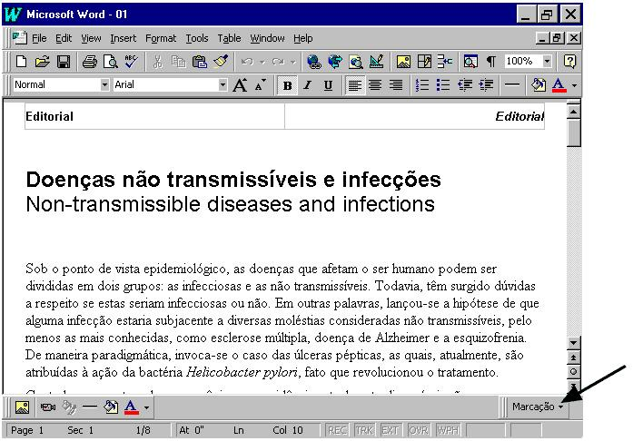
In Word 2007, it is different. The Markup bar will appear inside the Supplement group.
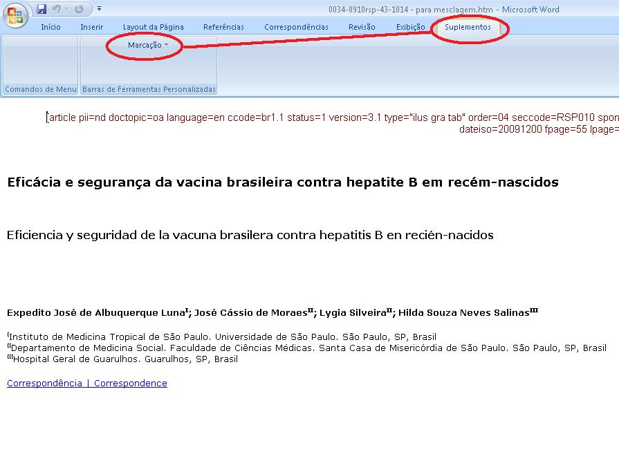
Open an article or a text file.
As clicking on Markup button, two options will be shown: configuration and Markup DTD-SciELO.
In Word 2007:
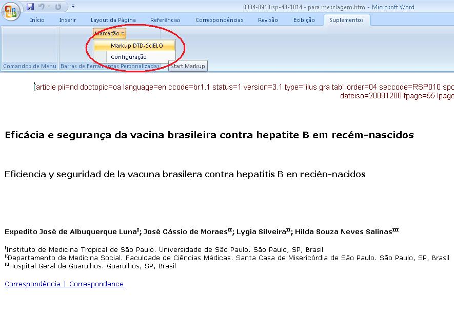
If the macro was not loaded normally, the message bellow will appear:

To solve it, select the Tools->Supplements and Models option of the menu.

So, remove the incorrect item, and put on the right path file corresponding of c:\scielo\bin\markup\markup.prg.

Using the program¶
Open a .html or .doc file.
Click on Markup DTD-SciELO to start the markup.
The Word bars will disappear, remaining only the Markup bars:
white: files operations, edit or eraser a tag, automatic markup
orange: floating tags, can be used in any document part
green: tags that have a specific hierarchy of DTD
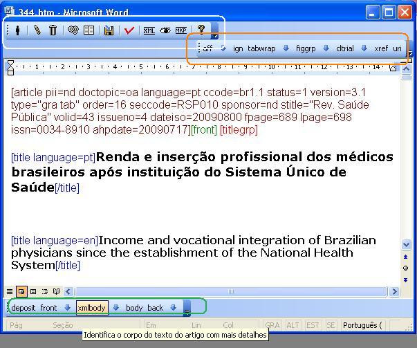
In Word 2007, all these tags bars are agrouped in Supplements.
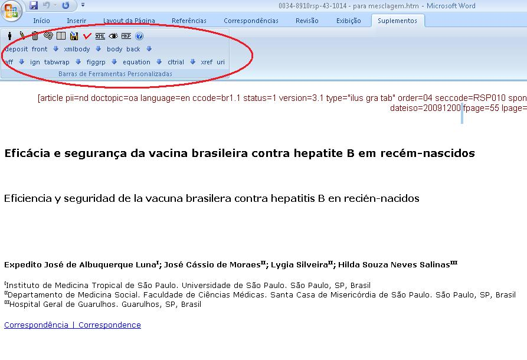
- The markup starts when you click on document type button:
- Article
- specifies scientific articles. They must have key-words, abstracts and bibliographic references. It is accounted in bibliometric module as scientific production.
- Text
- specifies texts that are part of a journal, but don’t have scientific worth. Ex.: Editorial, interview, review, etc.
The bars¶
General bar¶


Element’s attribute edition button¶
To edit attributes of an element, select the name element, then click on the edit (pencil) button. The program will ask for changing the values of the attributes.

Delete element button¶
To delete one element and its attributes, select the element name, then click on the delete button. The program will ask to confirm this action.


Automata 1 button¶
To mark bibliographic references automatically:
the journal have to have an Automata file, which configures the rules to identify the references elements.
select one bibliographic reference until its final dot, including, and then click on the Automata 1 button.

This action will activate a tool which will try to identify the bibliographic reference elements automatically. The tool will present the several possibilities of identification. So the user have to select the correct one.
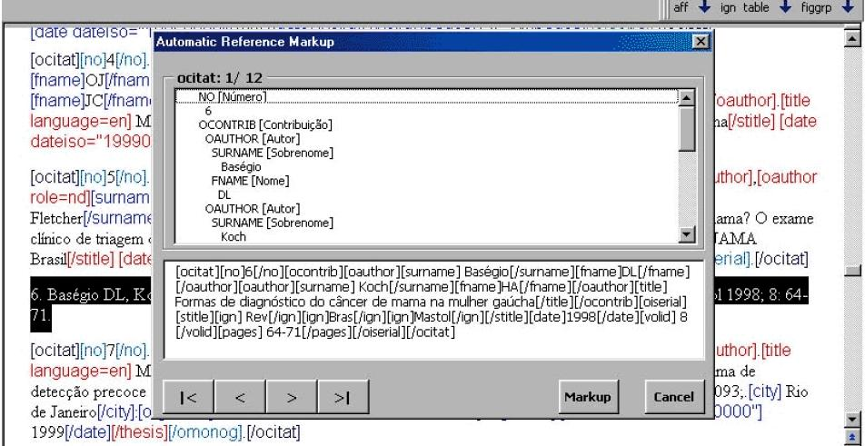
Automata 2 Button¶
To mark a set of bibliographical references automatically (available only for Vancouver standard). Select one or more bibliographic references and then click on the Automata 2 button.
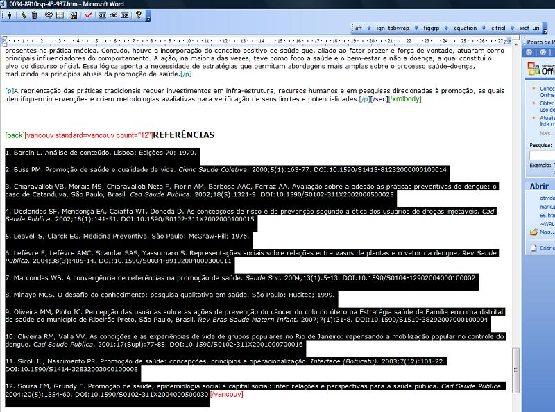
The program will mark all references it can identify and will also keep the original reference, marked as [text-ref]. Thus the user can compare them in order to check if the reference was correctly identified and proceed the correction, if it is necessary.
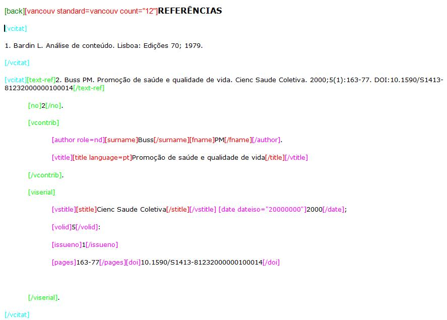
Validate markup button¶
To validate the markup, click on the Validate markup button. It will run the SGML Parser.

Floating tag bar¶

The floating elements are the ones which can appear in any part of the text.
- aff
- identifies an author affiliation
- ign
- identifies a text which can be ignored
- tabwrap
- (only valid for XML PMC)
- figgrps
- (only valid for XML PMC)
- figgrp
- (only valid for XML PMC)
- equation
- (only valid for XML PMC)
- cltrial
- identifies clinical trials data
- list
- (only valid for XML PMC)
- xref
- (only valid for XML PMC)
- uri
- (only valid for XML PMC)
- sciname
- (only valid for XML PMC)
Hierarchical tags bar¶
This bar groups the elements according to the DTD. This bar will present the elements of one hierarchical level each time. As the user goes to a down or up level, the bar presents respectively, only the down or up level. The user goes to a down level, when clicks on an element or on a down arrow, and goes to an up level, clicking on the up arrow.
If there is no element marked in the text, then the initial elements buttons (article and text) are presented.
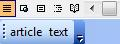
If there are any element marked in the text, the level just below the article or text are presented.
Down¶
Bar of front element
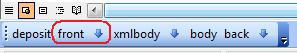
Bar of front element’s children
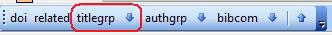
Bar of titlegrp element’s chidren
Up¶
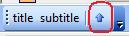 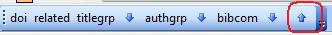 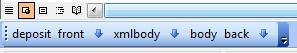
Error messages¶
To avoid errors and to guide the user during the markup, the program presents some messages in case the procedures described previously have not been correctly done. For example:
If the user has clicked on an element button and no text was selected.
If a mandatory atribute value wasn’t filled in.
If the user try to insert a tag in an incorrect place, disaccording to DTD.
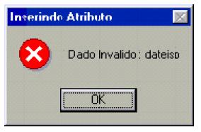Bad value to a mandatory attribute
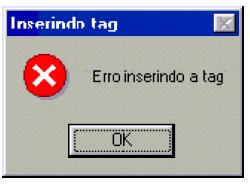The user tried to identify an element which is not according to the hierarchical structure / DTD
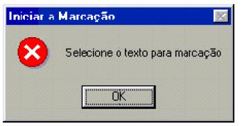the user has clicked on an element button and no text was selected